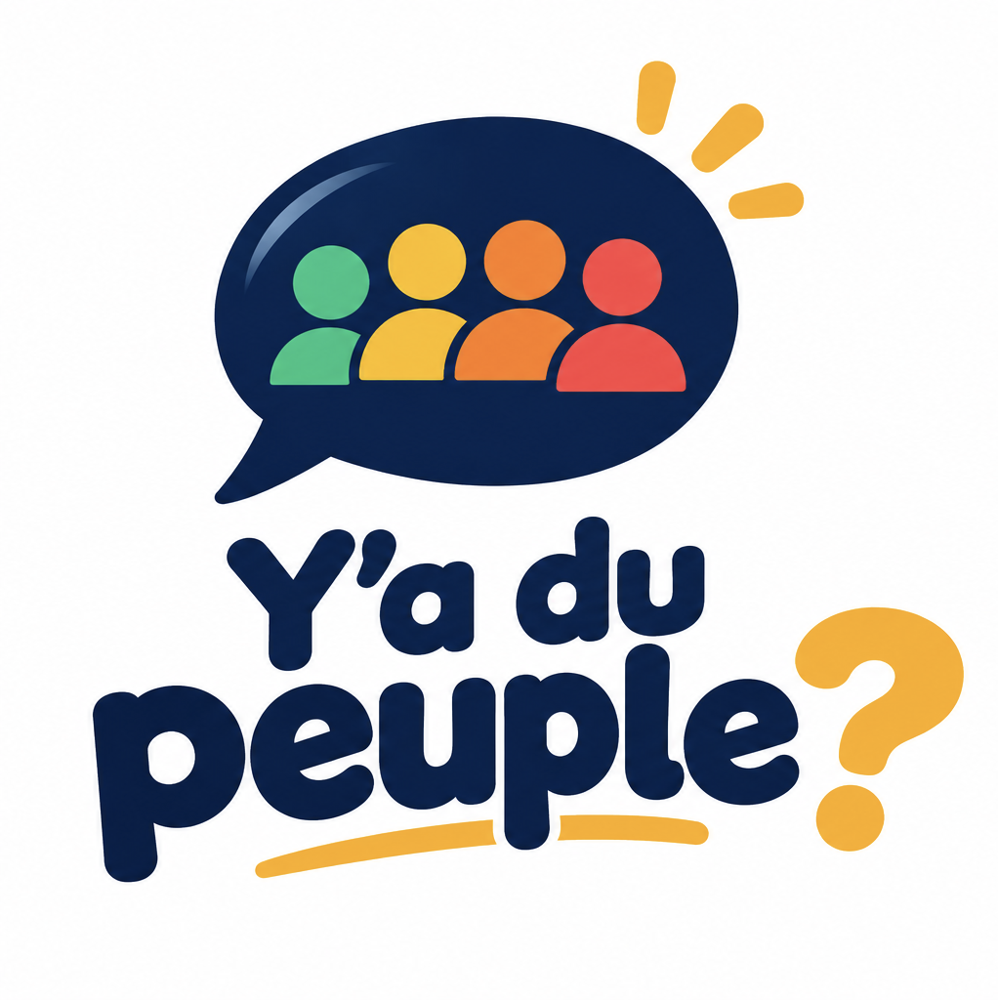

Choisis le restaurant : le QR code ouvre directement sa fiche. À poser près de la caisse ou de la borne du Drive.

Regardez l'affluence en direct, en salle et au Drive.Et dites-nous comment c'est : vous gagnez des points.